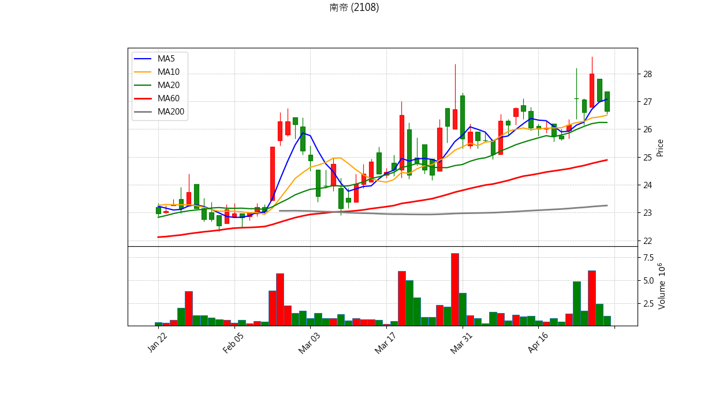

📊 股票庫存 出場與 AI 綜合診斷報告
分析時間: {datetime.now().strftime("%Y-%m-%d %H:%M:%S")}
結合量化條件與 Gemini AI 綜合技術分析
世德 (2066)
最新收盤價: 46.25 (更新時間: 2026-04-29 21:02)
💼 庫存狀態
買進均價：98.03
庫存股數：3000
預估損益：-155,340
報酬率：-52.82%
📋 量化診斷結果
⚠️ 【跌破 5日線】短線轉弱，留意停損/停利。
🚨 【跌破 10日線】波段趨勢破壞，強烈建議波段出場。
💀 【跌破季線且季線下彎】生命線斷裂，絕對停損訊號！

藍線: 5MA, 橘線: 10MA, 綠線: 20MA, 紅線: 60MA, 灰線: 200MA
Gemini 綜合診斷
南帝 (2108)
最新收盤價: 26.65 (更新時間: 2026-04-29 21:03)
💼 庫存狀態
買進均價：26.23
庫存股數：2000
預估損益：840
報酬率：1.60%
📋 量化診斷結果
⚠️ 【跌破 5日線】短線轉弱，留意停損/停利。

藍線: 5MA, 橘線: 10MA, 綠線: 20MA, 紅線: 60MA, 灰線: 200MA
Gemini 綜合診斷
美隆電 (2477)
最新收盤價: 21.20 (更新時間: 2026-04-29 21:04)
💼 庫存狀態
買進均價：27.10
庫存股數：2000
預估損益：-11,800
報酬率：-21.77%
📋 量化診斷結果
⚠️ 【跌破 5日線】短線轉弱，留意停損/停利。
🚨 【跌破 10日線】波段趨勢破壞，強烈建議波段出場。
💀 【跌破季線且季線下彎】生命線斷裂，絕對停損訊號！

藍線: 5MA, 橘線: 10MA, 綠線: 20MA, 紅線: 60MA, 灰線: 200MA
精材 (3374)
最新收盤價: 203.00 (更新時間: 2026-04-29 21:04)
💼 庫存狀態
買進均價：193.12
庫存股數：260
預估損益：2,569
報酬率：5.12%
📋 量化診斷結果
⚠️ 【跌破 5日線】短線轉弱，留意停損/停利。

藍線: 5MA, 橘線: 10MA, 綠線: 20MA, 紅線: 60MA, 灰線: 200MA
Gemini 綜合診斷
新日興 (3376)
最新收盤價: 205.00 (更新時間: 2026-04-29 21:05)
💼 庫存狀態
買進均價：220.14
庫存股數：320
預估損益：-4,845
報酬率：-6.88%
📋 量化診斷結果
⚠️ 【跌破 5日線】短線轉弱，留意停損/停利。
🚨 【跌破 10日線】波段趨勢破壞，強烈建議波段出場。
💀 【跌破季線且季線下彎】生命線斷裂，絕對停損訊號！

藍線: 5MA, 橘線: 10MA, 綠線: 20MA, 紅線: 60MA, 灰線: 200MA
Gemini 綜合診斷
安勤 (3479)
最新收盤價: 90.70 (更新時間: 2026-04-29 21:05)
💼 庫存狀態
買進均價：92.16
庫存股數：435
預估損益：-635
報酬率：-1.58%
📋 量化診斷結果
⚠️ 【跌破 5日線】短線轉弱，留意停損/停利。
🚨 【跌破 10日線】波段趨勢破壞，強烈建議波段出場。

藍線: 5MA, 橘線: 10MA, 綠線: 20MA, 紅線: 60MA, 灰線: 200MA
Gemini 綜合診斷
佳必琪 (6197)
最新收盤價: 206.50 (更新時間: 2026-04-29 21:06)
💼 庫存狀態
買進均價：179.35
庫存股數：220
預估損益：5,973
報酬率：15.14%
📋 量化診斷結果
✅ 目前未觸發明顯技術面出場條件，可依紀律續抱。

藍線: 5MA, 橘線: 10MA, 綠線: 20MA, 紅線: 60MA, 灰線: 200MA